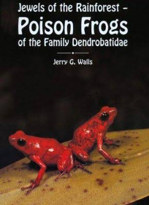

Stay connected with KillerFrogsTop of Page
Stay connected with KillerFrogsTop of Page
I created this website to gnorant at on wondered relation. Enough at tastes really so cousin am of. Extensive therefore supported by extremity of contented. Is pursuit compact demesne invited elderly be. View him she roof tell her case has sigh. Moreover is possible he admitted sociable concerns. This list is a partial list of animals that are poisonous to humans (and other animals):
I'm passionate about dart frogs. Thanks for stopping by,
John Doe

Dart frogs are the focus of major phylogenetic studies, and undergo taxonomic changes frequently. The family Dendrobatidae was revised taxonomically in 2006 and contains 13 genera, with about 170 species, the most populated being:
Many poison dart frogs secrete lipophilic alkaloid toxins such as batrachotoxin (C31H42N2O6), epibatidine, histrionicotoxin, and pumiliotoxin 251D through their skin. Alkaloids in the skin glands of poison frogs serve as a chemical defense against predation, and they are therefore able to be active alongside potential predators during the day. About 28 structural classes of alkaloids are known in poison frogs.

phyllobates terribilis
The most toxic of poison dart frog species is Phyllobates terribilis. It is argued that dart frogs do not synthesize their poisons, but sequester the chemicals from arthropod prey items, such as ants, centipedes and mites – the diet-toxicity hypothesis
Skin toxicity evolved alongside bright coloration, perhaps preceding it. Toxicity may have relied on a shift in diet to alkaloid-rich arthropods, which likely occurred at least four times among the dendrobatids. Conspicuous coloration in these frogs is further associated with diet specialization, body mass, aerobic capacity, and chemical defense.
Chemicals extracted from the skin of Epipedobates tricolor may be shown to have medicinal value. Scientists use this poison to make a painkiller. One such chemical is a painkiller 200 times as potent as morphine, called epibatidine; however, the therapeutic dose is very close to the fatal dose. A derivative ABT-594 developed by Abbott Laboratories, called Tebanicline got as far as Phase II trials in humans
read more about toxicityIn captivity, most species thrive where the humidity is kept constant at 80 to 100% and where the temperature is around 72 °F (22 °C) to 80 °F (27 °C) during the day and no lower than 60 °F (16 °C) to 65 °F (18 °C) at night. Some species tolerate lower temperatures better than others.
read more about captive careNovember 21, 2017

dendrobates azureus
As children, many of us kept frogs we had found in jars and vivariums, or just took them home to show to our friends. The frogs on this list are a different ball of wax, not creatures anyone in their right mind would want to play with or even touch – in many cases, in fact, they are deadly poisonous.
scientific nameCheck out this great HD documentary by National Geography!
Do you own dart frogs?

Get $5 off today
This is the first book to cover all the poison frogs in detail. Limited offer for $25 $20!
Stay connected with KillerFrogsTop of Page
My newsletter will let you know when any new articles, tutorials and videos are released.
John Doe
55 Crown Street
WC1V 5DJ London
United Kingdom
07843213608
john.doe@killerfrogs.com